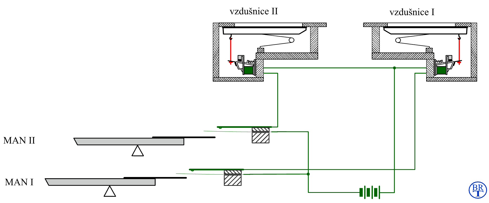
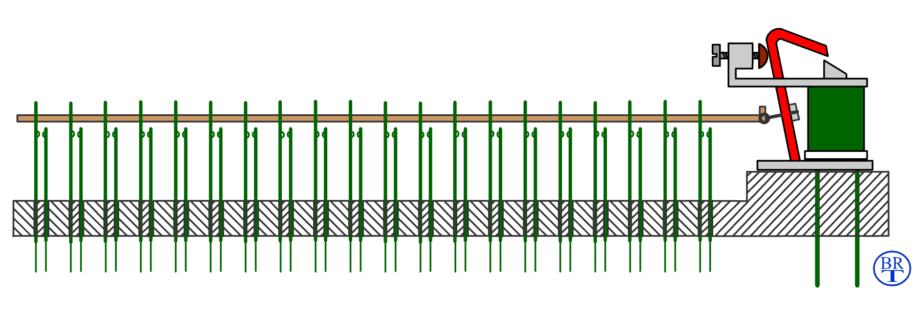
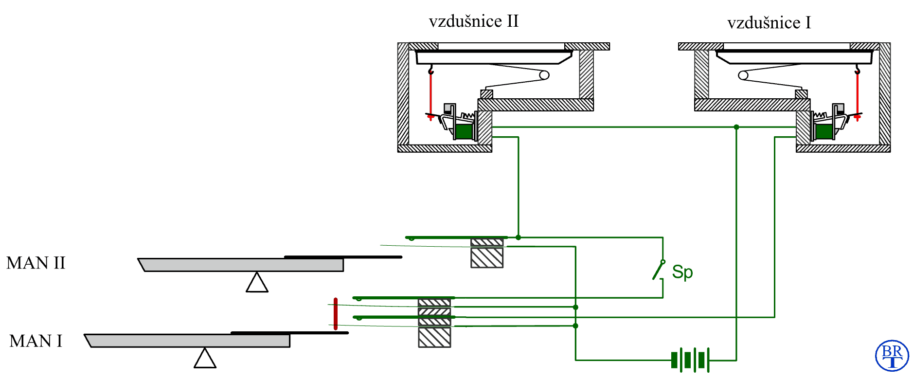

Funkce spojek v elektrické traktuře je stejná, jako u spojek mechanických či pneumatických. Spojky zajišťují jednosměrné propojení klaviatur navzájem (např. II/I či I/P) nebo připojení tónů či rejstříků v jiné poloze (superpojky a subspojky) či z jiného stroje (transmise či extenze – viz popis v úvodní kapitole o trakturách). Elektrické spojky se nepoužívají pouze u nástrojů s elektrickou trakturou, najdeme je i u nástrojů s elektropneumatickou trakturou či u nástrojů jinak čistě mechanických. U nových nástrojů se elektrická spojka buduje z několika důvodů:
Dalším případem, kdy se setkáme s elektrickou spojkou u jiného typu traktury jsou staré a rekonstruované nástroje. Tady jsou důvody pro použití elektrické spojky následující:
Realizace spojek je (ve srovnání s mechanickou a především pneumatickou
trakturou) u elektrické traktury poměrně jednoduchá, spočívá v elektrickém
propojení obvodů traktur spojovaných tónů. Vlastní propojení se provede
sepnutím kontaktů spojkového aparátu. Konstrukce spojkového aparátu
může být elektromechanická (v podstatě mnohokontaktní elektromagnetické
relé - viz dále, počet párů kontaktů odpovídá počtu propojovaných tónů
tj. 30 až 32 u spojky do pedálu a 56 až 61 u spojek manuálů) nebo elektronická
(diodový či tranzistorový systém bez pohyblivých součástí). |
Pro pochopení funkce spojek je nejnázornější jejich
provedení z čistě kontaktních prvků (bez polovodičových součástek či jiné
elektroniky). U nejjednodušší elektrické traktury klávesa spíná kontakt
a ten řídí tok elektrického proudu k akčnímu členu – elektromagnetu, který
otevírá tónový ventil: |

Animace ukazuje oddělené obvody tónových traktur
u dvoumanuálového nástroje. Společný je pouze napájecí zdroj (symbolizovaný
schématickou značkou baterie). Stisk klávesy každého z manuálů způsobí
otevření příslušného ventilu v odpovídající vzdušnici. Doplňme teď schéma
zapojení traktury o spojku: |
Na obrázku jsou zvýrazněny součásti, nutné pro realizaci
spojky II/I. U klávesy prvního manuálu přibude jeden
pár kontaktů (pro každou další funkci klávesy potřebujeme v kontaktním
provedení samostatný kontakt, každá další spojka tedy znamená další pár).Tento
kontakt je mechanicky svázaný s tónovým kontaktem (spíná současně, technické
řešení je popsáno v kapitole o komponentech
elektrické traktury). Spínač s označením Sp je kontakt
spojky, slouží k jejímu zapínání a vypínání a je samostatný pro každý
spojovaný tón (klávesu), jen tak může být zajištěno oddělení obvodů kláves
navzájem. U manuálu se tedy tento spínač opakuje 56 až 61 krát. Všechny
spojkové kontakty jsou ovládány současně řídicím prvkem spojky (např.
sklopkou s označením II/I). Přímé (např. mechanické) ovládání by vzhledem
k počtu kontaktních per bylo obtížné, použije se proto mezičlen – spojkový
aparát (v podstatě mnohopólové elektromagnetické relé). Jednu z jeho možných
konstrukcí ukazuje následující animace a skutečná provedení jsou zachycena
na fotografiích: |



Animace je zjednodušená, spojkový aparát je ve skutečnosti delší (párů kontaktů je většinou 30, u pedálové spojky použijeme jeden aparát, u manuálové spojky dvojici se společným ovládáním). Nevýhodou spojkového relé je značná složitost, citlivost na seřízení kontaktů a náročná údržba (čištění, výměna kontaktů…). Proto se u novějších systémů používá pro oddělení obvodů diodové matice (polovodičová dioda propouští proud jen jedním směrem, chová se tedy obdobně jako jednosměrný zpětný ventil u pneumatiky) ve spojení s tranzistorovými spínači (tranzistor se chová podobně jako kontakt relé, nemá ale žádné pohyblivé součástky):
Diodová matice spojky (pro 30 tónů, spojky do pedálu). Následující animace ukazuje činnost spojky. Stisk klávesy v prvním manuálu (MAN I) otevírá v závislosti na stavu spínače Sp buďto jen ventil ve vzdušnici I nebo oba ventily ve vzdušnicích I a II současně: |

Jednosměrnost spojky je zajištěna oddělením obvodů přidaným (druhým) kontaktem u klávesy prvního manuálu MAN I. Bez ohledu na polohu spínače Sp klávesa druhého manuálu MAN II ovládá pouze ventil ve vzdušnici II, pokud není klávesa v MAN I stisknuta, obvody jednotlivých vzdušnic jsou navzájem izolovány rozpojeným kontaktem na klávese. Pro každou spojku proto potřebujeme další kontakt, v případě, že by jejich počet přesáhl únosnou mez (cca 8, napružení kontaktů ztěžuje chod klávesy, obtížná je regulace současného spínání apod.), je výhodnější oddělení obvodů pomocí polovodičových diod: |
 Na
obrázku je srovnání obou způsobů. Zatímco v kontaktním provedení klávesa
ovládá pětici kontaktů (jeden tónový - přímý a čtyři pro další funkce,
např. spojky, extenze apod.), stačí u zapojení s diodami kontakt jeden.
Diody propouštějí proud jen v jednom směru (zde zleva doprava - od klávesy
k dalším obvodům), pokud se na některý obvod přivede proud zprava, diodou
neprojde a k dalším obvodům se tak nedostane. Na
obrázku je srovnání obou způsobů. Zatímco v kontaktním provedení klávesa
ovládá pětici kontaktů (jeden tónový - přímý a čtyři pro další funkce,
např. spojky, extenze apod.), stačí u zapojení s diodami kontakt jeden.
Diody propouštějí proud jen v jednom směru (zde zleva doprava - od klávesy
k dalším obvodům), pokud se na některý obvod přivede proud zprava, diodou
neprojde a k dalším obvodům se tak nedostane. |
Samostatnou kapitolou mezi spojkami jsou multiplexní varhany (UNIT systém). U těchto varhan se z praktických důvodů používá téměř výhradně elektrická traktura, u níž je realizace spojek (extenzí a transmisí, na nichž jsou v principu multiplexní varhany založeny) nejjednodušší. Zapínání rejstříků se u UNIT varhan děje stejně, jako zapínání spojky u varhan vystavěných. Každý ovladač rejstříku zapíná spojkové relé, které má tolik kontaktů, kolik je kláves. Toto relé připojí klaviaturu na příslušný úsek píšťalové řady (podle polohy zapnutého rejstříku). Pro každý extenzovaný rejstřík potřebujeme z výše popsaného důvodu oddělení obvodů samostatný kontakt na klávese, pokud je řad více než cca 8, je lepší vložit ke klávesám tónové mezirelé (klávesa bude mít jen jeden kontakt, který sepne proud do cívky mezirelé a to teprve spojí svazek kontaktů). |

Na obrázku je elektrické schéma části traktury "UNIT" - multiplexního nástroje se dvěmi manuály a šesti rejstříky, které jsou extenzovány ze dvou píšťalových řad - principálové a flétnové. Zobrazeny jsou pouze tři klávesy v každé klaviatuře (velké C, malé c a jednočárkované c') a jim odpovídající část vedení, kontaktů včetně elektromagnetů ve vzdušnici. První manuál ovládá celkem 5 rejstříků, každá klávesa má tedy pětici kontaktů, u druhého manuálu je kontakt jen jeden. Relé pro spínání rejstříků mají tolik kontaktů, kolik je kláves (v tomto případě 56, naznačeno symbolicky ve schématu). Elektromagnety pro ovládání ventilů píšťal jsou značeny značkou píšťalové řady (P pro principálovou a F pro flétnovou) a pořadovým číslem píšťaly v řadě. Stiskneme-li klávesu velké C v prvním manuálu, v závislosti na zapnutém rejstříku bude ovládat magnet pod píšťalou č. 1 (Principál 8'), č. 13 (Oktáva 4'), č. 19 (Kvinta 2 2/3') v principálové řadě a č. 1(Flétna 8') nebo č. 13 (Flétna 4') ve flétnové řadě. Ve schématu jsou dobře vidět rejstříky, které jsou napojeny v jiné než základní poloze (oktávy a kvinty), jsou to ty, u kterých je spoj mezi rejstříkovým relé a výstupní svorkou hracího stolu veden šikmo, ne přímo. |
U současných systémů elektrických traktur s klávesovým
kodérem v hracím stole (v podstatě zařízením na bázi počítače, který je
s akčními členy v nástroji propojen pomocí sběrnice tvořené tenkým kabelem,
optickým vláknem apod. viz úvodní kapitola o elektrické
traktuře) je realizace spojek záležitostí úpravy software kodéru (a
případně připojením ovládače příslušné spojky – vypínače, sklopky apod.).
Tato zdánlivá jednoduchost vede často ke snaze disponovat do nástroje
značný počet spojek (nejen klaviatur navzájem, ale také spojek v jiných
než základních polohách, spojek jen některých rejstříků apod.) s cílem
jednak „opticky“ zvýšit počet rejstříků, jednak vyhovět zákazníkovi (ve
smyslu mít co nejdokonalejší a nejsložitější nástroj při relativně nízkých
nákladech na další rejstříky). Využití takového množství spojek při hře
je často neúčelné až problematické, málokdy totiž vedou k vytvoření nové
barvy zvuku nástroje, spíše zvyšují hlasitost a zhutňují zvuk. |
Na souvisejících stránkách jsou popsány komponenty elektrické traktury, tónová traktura a rejstříková traktura. Tématiku spojek rovněž popisují stránky o mechanických spojkách a pneumatických spojkách. |
Poznámka: Tato stránka je součástí Anatomie varhan ®, © Ing. Petr Bernat, Animace © Ing. Petr Bernat